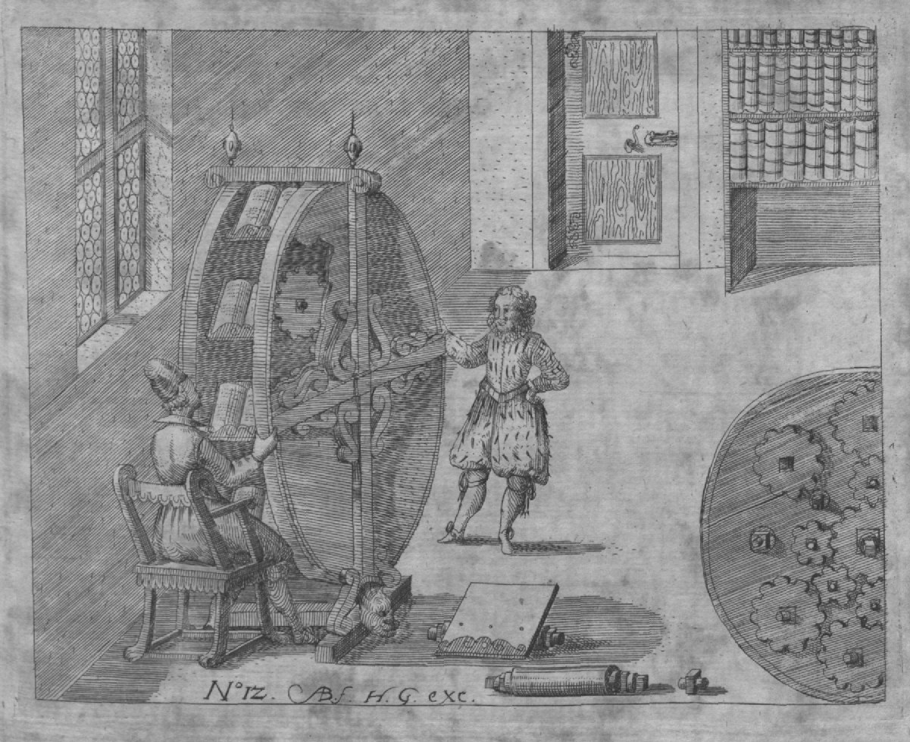

Abstract Due
Readings:
Lacan, “Seminar on the Purloined Letter”
Derrida, “Purveyor of Truth”
Barthes, Mythologies Part I 1-215
especially “Novel and Children,” “Power and ‘Cool’,” “Depth Advertising,” “Einstein’s Brain,” “Shock Photos,” “Two Myths of the New Theater,” “Tour de France as Epic,” “Neither/Nor Criticism,” “Electoral Photogeny,” “The Bourgeois Art of Song,” and “Poujade and the Intellectuals”
Prepare to give your close reading on your version of Book 9 of the Odyssey
look particularly for turns of phrase that you think don’t translate.
Rant:
What is the appropriate object or subject of a close reading? If close reading as we know it began through an appropriation of methods of reading symbols employed for the reading of religious texts for centuries for the reading of secular literary texts, then does it make sense to continue the move one more iteration and read things beyond canonical, literary, linguistic texts? Is this the proper field for something called comparative literature? Why should we care?
Questions of decorum around close reading continue to be asked today. When we “close read” a film or a political speech what assumptions are we throwing onto those “texts” which are similar from literature? What assumptions are different? What about a newspaper article or a bike race? What work is Barthes up to?
------
Exercise:
Find a journal in your field of interest that publishes abstracts of articles (try Project MUSE or JSTOR for start). Read five abstracts. Compare with five abstracts from a conference website of a conference in your field that happens to publish abstracts online. What differences and similarities do you notice? Now compare the best or most interesting journal abstract with the first and final paragraphs of the article. What differences and similarities do you notice? What does this tell you about the the differences between public performance of a paper and publishing one? What does it tell you about the relationships between abstracts, introductions, and conclusions?
-----
Bring:
Abstract and Outline Due
Close Read What?
Monday, September 17, 2012

CMLIT501A Close Reading Historically